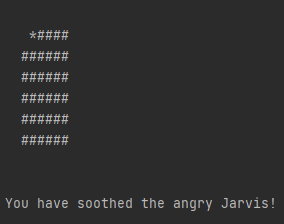
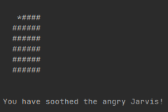

Pearson Vue Internship

Pearson Vue Internship

In September 2020, I started working for Pearson Vue as a Software Engineering Intern on their Desktop
testing platform. I did not realize how much I would learn in the months that followed. I was thrown head first
into the software development world. There was a steep learning curve at first, it took the first three or so
months to even feel comfortable doing my job. I started out working on various production defects. This gave
me the opportunity to familiarize myself with the codebase and become comfortable with the software.
After several months of working on defects, some easy, some exceedingly difficult, I graduated to feature work.
This had a learning curve of its own, but I quickly learned the ropes. Working for Pearson has had
ups and downs, every now and then I will be stuck on a defect or story for what feels like forever, but
the feeling that comes with solving a difficult problem never goes away. I am very grateful for what I
have been able to learn working for Pearson.
Hug the Angry Jarvis
Hug the Angry Jarvis

Hug the Angry Jarvis was my final project in CISC 230 (Object Oriented Programming). The goal of the game is
to find and hug the Angry Jarvis. The Jarvis moves randomly about the board and occasionally drops 'homework traps.'
The player can move in any direction on the grid, trying to dodge homework traps and find the Jarvis. If a player hits
a home work trap, they have a 5 second delay before they can move again. Once a player
has been in a square, that square is then visible, meaning the Jarvis will be seen if he enters that square. The game
can be made more difficult by increasing the board size or the Jarvis difficulty.
I remember this assigment very clearly. It was the culmination of all the learning from that semester.
I took CISC 230 with Dr. Sawin. While Sawin is very intense at times, I learned so much, a lot of which I use
in my every day life. Object Oriented was one of my favorite classes and this project was my favorite by far!
TommieCoin Wallet
TommieCoin Wallet
My favorite project of all time was creating a crypto currency wallet for the fake cryptocurrency "TommieCoin"
in Advanced Information Security(CISC 410). The design was pretty open-ended, there were a few requirements, namely, the wallet
had to be able to access the amount of coins it had, it had to be able to send coins, and finally it had to be able to mine coins. It
had to be written in Python, but beyond that, the rest of the design was up to me!
I greatly enjoyed being able to build my own program. It was really fun to go through the design
process. It took many iterations to finally get it working well, but once it was done it worked great! There
were many occasions during the coding that I realized that I should have done something differently, so I would
go back and change it. This process ended up making my code a lot cleaner in the end. It was also fun to see
the wallet function as a finished project, I would definitely do something similar again!